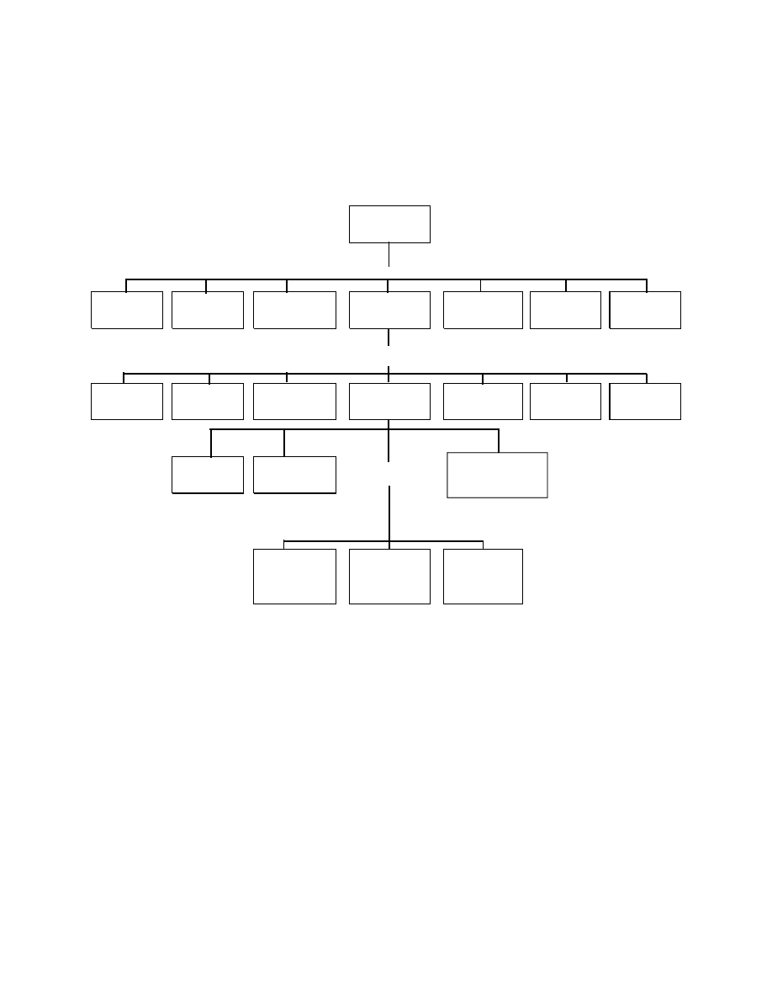

CITY OF CHESAPEAKE ORGANIZATION
The City of Chesapeake derives its governing authority from a Charter granted by the General
Assembly of the Commonwealth of Virginia. The City is organized under a Council-Manager form of
government in which the citizens elect the Council and the Council appoints the City Manager. Council
also appoints the City Attorney, City Clerk, Real Estate Assessor, Planning Commission Members,
Internal Auditor, and members of other boards and commissions. The Sheriff, Treasurer, Clerk of the
Circuit Court, Commonwealth’s Attorney, School Board, and Commissioner of Revenue, are elected by
the citizens. The City department heads are appointed by the City Manager.
The City provides a full range of general governmental services for its citizens. These services
include police and fire protection, collection and disposal of refuse, water and sewer services, parks and
recreation, libraries, and construction and maintenance of highways, streets, and infrastructure. Other
services provided include public education in grades kindergarten through twelfth, public health and
social services, planning and zoning, mental health assistance, agricultural services, judicial activities,
and general administrative services.
The City wide organizational chart on the following page lists each City department or agency
and its relationship to the City Council, City Manager, and the Citizens.
City of Chesapeake, Virginia
FY 2011 - 2012 Operating Budget
1

CITY WIDE ORGANIZATIONAL CHART
CITIZENS
Elect
Sheriff
Treasurer
Clerk of the Circuit
Court
CITY COUNCIL
Commonwealth's
Attorney
School Board
Commissioner of
Revenue
Appoints
City Attorney
City Clerk
Real Estate
Assessor
CITY MANAGER
Planning
Commission
Other Boards &
Commissions
Audit Services
Assistant to the
City Manager
Assistant to the City
Manager
Appoints
Deputy City
Manager
Deputy City
Manager
Deputy City
Manager
Agriculture
Budget
Community Services Board
Planning
Finance
Health Department
Public Utilities
Human Resources
Human Services
Public Works
Information Technology Libraries & Research Services
Development & Permits Economic Development Bureau of Community Programs
Procurement
Parks & Recreation
Fire
Police
Public Communications
City of Chesapeake, Virginia
FY 2011 - 2012 Operating Budget
2

HOW TO READ THE OPERATING BUDGET DOCUMENT
The Operating Budget Document is comprised of twelve sections. The first section is the Manager’s
Message. It highlights the significant changes from the current year, the City’s priorities and issues for
funding in the upcoming fiscal year, the short-term financial goals and operational policies guiding the
development of the budget, and the assumptions used in developing revenue estimates for the
upcoming year.
The second section, the Overview, describes the City’s organization, the Operating Budget
document, and the process for developing the Operating and Capital budgets. It also documents the
City’s short and long term financial and budget policies, summarizes the City’s debt management
policies, highlights the City’s strategic goals and objectives, and explains the City’s financial structure.
The third section, the Summaries, includes charts and tables, which provide an overview of all of
the revenues and appropriations included in the Operating Budget. The fourth section, Revenue,
provides a summary of the City’s economic outlook which guides the development of revenue
estimates, describes each fund’s revenue resources, and provides detailed information on the revenue
estimates included in the Operating Budget.
Specific information about the funding, the activities, the goals, and the objectives of each
department is included in the next six sections: Governance and Management, Quality Community of
Life, Economic and Environmental Vitality, Education, Public Safety and Justice, and Debt Service.
Each department is comprised of one or more budget programs.
The
Capital Budget Summary provides an overview of the City’s Capital Improvement Budget
(CIB). This overview includes the City’s debt management policy, a statement of the City’s indebtedness,
the amount of debt service appropriated in the Operating Budget, an abbreviated list of the CIB projects
scheduled for the upcoming fiscal year, and an estimate of the Operating Budget impact of the projects
upon completion. However, the CIB is a separate document. Greater detail about the CIB and specific
projects is included in a separate capital budget document.
The final section is the Appendix. It includes a City Profile that lists statistics about Chesapeake,
the portion of the City Charter which discusses the Budget functions, and a portion of the state code
related to the School’s Operating Budget.
City of Chesapeake, Virginia
FY 2011 - 2012 Operating Budget
3
OPERATING BUDGET PROCESS
Operating Budget Development:
The City Charter requires the City Manager to submit a balanced operating budget to City
Council by April 1
st
for the next ensuing fiscal year. The fiscal year begins on July 1
st
and ends June 30
th
of the following year. The proposed budget, which may be modified by the City Council, is required to
be adopted by a majority vote of the City Council 47 days prior to the end of the current fiscal year.
Otherwise, the budget as submitted by the City Manager becomes the budget for the ensuing fiscal
year.
Operating and Capital Budget Calendar:
The following table illustrates the schedule used to develop the FY 2011-12 Operating and
Capital Budgets.
Due Date
Activity
Responsible Party
09/05/10
Five Year Forecast draft completed
Budget Office
10/05/10
Council Strategic Planning Meeting on Budget
and Fiscal Policy
City Council, City
Manager, Budget Office
10/15/10
Operating and Capital Budget framework to
Departments
Budget Office
10/27/10
Citizen meetings for Budget input
City Council, City
Manager, Budget Office,
Public Communications
12/01/10
Capital Improvement Budget requests back
from departments
Departments, Budget
Office
12/01/10
Department submission of Operating Budget
due to Budget Office
Departments, Budget
Office
12/31/10
Review and summarize Operating and Capital
Improvement Budget proposals
Budget Office
01/04/11
Council Strategic Planning Meeting
City Council, City
Manager, Budget
02/15/11
Operating and Capital Improvement Budget
review with Department Heads
City Manager,
Departments and Budget
Office
02/25/11
Summary of Budget due to City Manager
Budget Office
03/01/11
Council Strategic Planning Meeting
City Council, City
Manager, Budget
03/02/11
Final Revenue Estimates
Budget Office
03/04/11
Draft Budget document due to City Manager
Budget Office
03/08/11
Manager’s budget message to Budget Office
City Manager
City of Chesapeake, Virginia
FY 2011 - 2012 Operating Budget
4
OPERATING BUDGET PROCESS (CONT)
Due Date
Activity
Responsible Party
03/10/11
Operating and Capital Improvement Budgets
to Printer
Budget Office
03/22/11
Operating and Capital Budgets presented to
Council (April 1 is 90th Day Prior to July 1)
City Manager and Budget
Director
03/28/11
Advertise Operating and Capital Budgets
City Clerk and City
Attorney
04/12/11
through
05/03/11
Council Work Sessions
City Manager and City
Council
04/26/11
and
05/10/11
Public Hearings on Operating and Capital
Improvement Budgets
City Clerk and City
Council
05/10/11
City Council adopts Operating and Capital
Improvement Budgets (May 15 is 47th Day
Prior to July 1)
City Council
06/14/11
Amendments required by State Budget action
are presented to City Council for action prior
to July 1 implementation
City Manager and City
Council
Operating Budget Development Process:
• Five - Year Forecast - In the fall of each year, the Budget Office prepares a Five -Year Forecast of
revenues and expenditures. The expenditure projection identifies the future costs of debt service
and the operating cost of completed capital projects. The Five - Year Forecast also identifies the
cost of budget drivers such as fuel costs, costs for employee compensation and benefits, as well as
other known upcoming cost increases. The first year of the forecast is used in creating framework
and target funding levels for departments in preparing the Operating Budget.
• Department Operating Budget Submissions - The Department and Agency Heads submit Operating
Budget requests in the format prescribed by the Budget Office and the City Manager. Departments
are asked to submit a base level of funding at a targeted dollar to the Budget Office. The Budget
Office reviews, summarizes, and makes recommendations pertaining to the requests for the City
Manager. The City Manager and his designees conduct hearings with departments as needed to
discuss the department’s requests for funding.
City of Chesapeake, Virginia
FY 2011 - 2012 Operating Budget
5
OPERATING BUDGET PROCESS (CONT)
• School Board - The proposed budget of the School Board is submitted to the City Manager for
distribution to the City Council. The City Manager makes recommendations in his proposed budget
regarding the total appropriation for the School System. City Council makes an annual appropriation
to the School Board but is prohibited from exercising any control regarding the specific expenditure
of School Board operating funds.
• Proposed Budget Presented to Council - The City Manager prepares a proposed Operating Budget
for submission to the City Council. The proposed Operating Budget includes tax rates sufficient to
produce revenues needed to meet City and School expenditures contemplated in the combined
initial budget. After City Council work sessions and public hearings, the proposed budget may be
revised or amended by Council and an appropriations ordinance is adopted. Tax rates are
established prior to the beginning of the fiscal year for which the budget is prepared.
Operating Budget Execution:
On July 1 of each year, the adopted budget is implemented. Concurrently, the Budget Office
reviews the amount of revenues collected in the fiscal year ending in June. The actual level of revenues
realized are compared to the projections and assumptions used in preparing the Operating Budget for
the budget year beginning in July. The Budget Office and the City Manager work together to identify
potential concerns and advise Council. If necessary, the City Manager will recommend adjustments to
the Operating and Capital Budgets to address problems that are identified. The Budget Office conducts
a quarterly revenue analysis to ensure that revenues continue to be in accordance with the estimated
revenues used to support the Operating and Capital Budgets.
Operating Budget Amendments:
After Council adopts the original appropriation ordinance, the Operating Budget may be
amended in two ways. First, Council may adopt an ordinance to increase or decrease the total level of
estimated revenue and appropriations. As stated in the City Charter, if during the year the manager
certifies that there are funds available in excess of those estimated in the budget, the Council, by
ordinance may make supplemental appropriations for the year up to the amount of such excess.
Conversely, should revenues not be sufficient, the Council, by ordinance may de-appropriate funds to
ensure the budget remains balanced. Second, the City Manager may transfer appropriations between
departments (functions) and funds throughout the year without additional approval from City Council.
City of Chesapeake, Virginia
FY 2011 - 2012 Operating Budget
6
OPERATING BUDGET PROCESS (CONT)
Operating Budget Controls:
The Operating Budget Ordinance sets the legal level of appropriation controls at the fund level.
The City Manager implements the following additional budgetary controls to ensure that expenditures
are within appropriation approved by Council and the level of realized revenues.
• The City Manager requires that each department’s expenditure remain within the appropriations for
that department by fund unless another specific level of control has been specified for a
department.
• The City Manager approves all transfers between funds and between functions.
• The City Manager approves all transfers from Personnel related and other controlled accounts.
• The City maintains an encumbrance accounting system. The estimated purchase order amount is
encumbered prior to the release of purchase orders to vendors. Purchase order, which would result
in an overrun of available funds, would not be released until additional appropriations are made
available. Outstanding encumbrances are disclosed in the Notes to the City’s Financial Statements
for each year end.
City of Chesapeake, Virginia
FY 2011 - 2012 Operating Budget
7
CAPITAL BUDGET PROCESS
Capital Budget Process:
• Capital Improvement Budget - The Capital Improvement Budget (CIB) is prepared concurrently with
the Operating Budget and spans the same fiscal cycle - July 1st through June 30th. As with the
Operating Budget, the process for the CIB preparation begins with the City’s Five -Year Forecast in
the fall of each year. Through the Five - Year Forecast, the City estimates the resources available
and the anticipated expenditures for the Operating Budget and the funding available for additional
debt service to support new Capital Improvement Budget requirements. The Operating Budget
document includes a Capital Budget Summary, which highlights specific debt management policies,
the level of debt service, and the specific capital projects. However, the Capital Improvement
Budget is prepared as a separate budget document, which provides greater detail on the CIB
development and process.
• Relationship to the Operating Budget - Developing and adopting the Operating and CIB during the
same time frame, promotes sound fiscal policy and cohesiveness by allowing Council and
management to review both requests simultaneously. Further, the Operating and the Capital
Improvement Budget development are specifically integrated by:
• Incorporating projected operating costs for each capital project in the City’s Five - Year Forecast.
• Incorporating the anticipated level of debt service in the City’s Five - Year Forecast.
• Appropriating the required level of debt service as part of the Operating Budget.
• Appropriating the required operating costs associated with completed capital projects in the
Operating Budget.
City of Chesapeake, Virginia
FY 2011 - 2012 Operating Budget
8

LONG RANGE PLANNING AND THE OPERATING BUDGET
The following is a brief description of planning processes within the City and the impact on the
Operating Budget development process.
• As a start to developing the Operating Budget, meetings were conducted in October to give citizens
a chance to provide input to the City Council and the City Manager on their budget concerns.
• Council Strategic Planning Meetings are held throughout the year to focus on the City’s goals, vision,
and land use issues. Council develops its vision and its list of priorities for the next three to five
years. In addition, staff provides Council with a fiscal update, trends and issues in various
departments including Economic Development, Planning, Real Estate Assessor and Public Schools.
• The Commonwealth of Virginia requires the City to adopt a Comprehensive Plan for the physical
development of territory within its jurisdiction. The Capital Improvement Budget (CIB) is a major
tool for implementing the Comprehensive Plan. Projects included in the CIB shall be consistent with
the City Comprehensive Plan. The Planning Department reviews the proposed Capital Improvement
Budget prior to the adoption of the CIB by Council to ensure that it is consistent with the
Comprehensive Plan. A second major tool for implementing the Comprehensive Plan is the Zoning
Ordinance and its enforcement by the Department of Development and Permits.
• A five-year Capital Improvement Plan (CIP) is developed during the same time as the Operating
Budget. The development of the CIP and Operating Budget are coordinated by identifying
projections for both in the Five - Year Forecast, by identifying the level of Operating Budget support
required to finance the CIP, and by identifying the Operating Budget impact of completed CIP
projects. The process and policies for the development of the CIP and detailed information about
specific projects are included in a separate CIB document. A Capital Budget Summary is included in
the Operating Budget.
• The Budget Office develops a Five - Year Forecast each year. The Five-Year Forecast evaluates the
available resources and anticipated costs over a five year period. It incorporates levels of
anticipated revenues over the next five years, the projected levels of operating costs, the
anticipated levels of debt service for the CIB, the anticipated impact of the Operating Budget for
such increases in operating costs as new capital projects, budget drivers such as increased fuel costs,
and increased employee compensation and benefit costs. In turn, the first year of the Five - Year
Forecast is used as framework from which to develop the guidelines and targets for the Operating
Budget. The Five - Year Forecast also is used to determine the level of funding the City will have to
support Capital Improvement projects.
City of Chesapeake, Virginia
FY 2011 - 2012 Operating Budget
9
CHESAPEAKE CITY COUNCIL PRIORITY-BASED RESOURCE ALLOCATION RESULTS
SEPTEMBER 2010
City Council has identified six priorities that reflect the long-range direction of the local government.
Each priority includes several definitions that operationalize the broader priority. These are not listed in
priority order.
A. Ecological Stewardship
1. Provides for renewal of the environment through recycling and reuse
2. Encourages energy conservation and "green" initiatives through incentives, awareness
education and community involvement
3. Ensures the preservation of green and open spaces, protects its natural resources and
safeguards its agricultural lands
4. Develops, regulates and maintains a clean, orderly community
5. Manages and mitigates factors that impact the environmental quality of its water and air
B. Economic Vitality
1. Provides a highly skilled and well-educated workforce to meet the needs of community
employers
2. Recruits and retains a well-balanced mix of businesses that contribute to the community's
sustainability and promotes quality job creation
3. Markets and cultivates its amenities, location, livability and tourism opportunities
4. Provides for well-planned development and commercial revitalization in all areas of the
community
5. Stimulates economic growth and supports small business with appropriate incentives and
efficient processes
C. Healthy, Nurturing, and Secure Community
1. Supports and encourages access to quality education and life-long learning opportunities
2. Provides for the physical, behavioral, and emotional health of its citizens
3. Cultivates training and career development opportunities to help employ the local
workforce
4. Promotes health and fitness through diverse recreation opportunities and well-maintained
parks and trail systems
5. Partners with others to ensure that individuals feel secure in their community, are self-
reliant, and able to meet their basic needs
City of Chesapeake, Virginia
FY 2011 - 2012 Operating Budget
10
CHESAPEAKE CITY COUNCIL PRIORITY-BASED RESOURCE ALLOCATION RESULTS
SEPTEMBER 2010 (cont.)
D. Quality Infrastructure and Transportation Systems
1. Continuously repairs, replaces and maintains its quality infrastructure networks
2. Collaboratively plans and designs regional transportation systems that ease congestion,
enhance traffic flow and improve connectivity
3. Provides and promotes a variety of convenient mobility options
4. Promotes "smart growth" while protecting and preserving its natural resources
E. Safe Community
1. Offers protection, enforces the law and is well-prepared to promptly respond to
emergencies and calls for service
2. Proactively prevents crime through a visible community presence, early intervention and
community involvement
3. Fosters a feeling of personal safety, physical and behavioral security, and emotional well-
being
4. Provides and supports a variety of safe activities for youth and families
5. Portrays a thriving, visibly appealing community that invests in a safe, well-maintained
transportation system
F. Good Governance
1. Enhance trust and transparency by ensuring accuracy, accountability, efficiency, and best
practice
2. Respond to the needs of internal and external customers
3. Provide stewardship and manage sustainability over human, physical, and financial
resources
4. Support decision making with timely and accurate short-term and long-range analysis
5. Monitor and ensure regulatory and policy compliance
City of Chesapeake, Virginia
FY 2011 - 2012 Operating Budget
11
SHORT TERM BUDGET AND FINANCIAL POLICIES
GUIDING THE DEVELOPMENT OF THE OPERATING BUDGET
The following is a list of short term Operating Budget and financial policies used in developing
and allocating funding in the Operating Budget. The list is evaluated each year.
Operating Budget Policies:
• Adhere to the City’s Charter for preparing, presenting, and deciding on budgets.
• Adhere to the State Code requirement (§22.1-93) that the governing body of a municipality shall
approve an annual budget for educational purposes by May fifteenth or within thirty days of the
receipt by the municipality of the estimates of state funds.
• Develop the Operating and Capital Improvement Budget under the supervision of the City Manager.
• Coordinate the development of the Operating and Capital Budgets in order to link the two together
before making decisions on either.
• Implement approved/amended budgets and policy direction by Council under the supervision of the
City Manager with input from the departments.
• Reevaluate “Base Budget” to ensure removal or reduction of any nonrecurring requirement or
service in the latest Approved Operating Budget.
• Assure quality of programs in preference to poor or marginal quality programs even if it is necessary
to eliminate services to balance the budget.
• Assure “Excellence in Stewardship” with a balance between resources allocated to good
management and legal compliance versus resources allocated to service for our citizens.
• Ensure that the personnel complement in the Operating Budget accurately reflects the City’s latest
Human Resources Management System and Compensation Plan.
• Evaluate the benefits of computers, special equipment, vehicles, and other required equipment
before purchase and/or replacement according to useful life criteria when not determined
“economically non-repairable.”
• Recover full costs of common services provided by City Garage, Department of Information
Technology, and Self-Insurance by charging the using departments and reimbursing for the services
through Internal Service Funds.
• Evaluate the City’s allocation of resources to civic and external organization on the basis of need and
relative benefits to its citizens and/or humanity. Require contracts and periodic reports of actual
citizens and persons served.
City of Chesapeake, Virginia
FY 2011 - 2012 Operating Budget
12

SHORT TERM BUDGET AND FINANCIAL POLICIES
GUIDING THE DEVELOPMENT OF THE OPERATING BUDGET (cont.)
• Provide for increased operating costs in the Operating Budget of newly completed or acquired
facilities that were initially funded through the Approved Capital Budget.
• Adhere to the City’s Charter for Public Hearing before approving/amending budget and/or
appropriating funds.
• Require prior approval of all affected departments before transfer of charges between departments.
• Execute budget(s) as approved and manage to the extent required to assure compliance with the
intent of Council, and advise and seek corrective consent when latest Council intent is not being
met.
• Fund, to the extent possible, the capital costs for technology which will improve the City’s efficiency
and effectiveness.
• Evaluate new technology spending for future cost savings and adjust appropriations accordingly.
• Support economic development programs which will add to the City’s tax base.
• Support public safety programs which will have a direct impact on the safety and well being of
citizens.
• Support programs and services for education, recreation, development of youth, and senior citizens.
• Look for alternative sources for providing services and programs within the community at no cost or
at a lower cost than currently being provided by the City.
• Seek privatization opportunities where programs and services can be offered at a lower cost than
what the City spends to provide the same services provided that the quality of services is not
compromised.
• Support regional cooperation to the extent that all involved parties receive proportionate benefit
and the City of Chesapeake’s costs are minimized.
• Actively seek public/private partnerships for services currently funded 100% by the City of
Chesapeake which will reduce the City’s costs and either expand program scope or reach more
citizens.
• Appropriate all grants, as defined by the City’s Grants Special Revenue Fund Policy, to the Special
Revenue Fund.
• Appropriate funds equal to estimated revenues from dedicated funding source.
City of Chesapeake, Virginia
FY 2011 - 2012 Operating Budget
13
SHORT TERM BUDGET AND FINANCIAL POLICIES
GUIDING THE DEVELOPMENT OF THE OPERATING BUDGET (cont.)
Financial Policies:
• Expect Operating Budget to be balanced on a current revenue and current expense basis.
• Continue to provide for 6% of General Fund revenue as “Cash Flow and Emergency Reserve” as
required by the charter.
• Maintain a reserve equal to 5% of the General Fund revenue as a reserve for operating emergencies.
• In addition to the reserves noted above, maintain a minimum $20 million reserve for emergency
event response and recovery.
• Use lease/purchase financing cautiously and for no greater period than the estimated useful life of
the item of equipment and/or facility being financed not to exceed twenty (20) years.
• Expect the City Treasurer to pool all unrestricted monies and invest in a manner to maximize
revenue in low to no risk offerings while measuring cash availability for payrolls and bills.
• Do not rely upon debt for current operations.
• Continue to solicit and accept external grants only for non-permanent purposes so that the City
dollars are not required to fully fund the program at end of the grant period.
• Continue to evaluate the necessity and value of required fund balance and reserves and
communicate the criteria and methodology used.
•
Use one-time revenues and resources to support projects, programs, and purchases with one-time
costs.
•
As the City’s highest level of decision-making authority, the City Council has authority to commit the
City’s fund balance for a specific purpose. The City Manager has authority to assign fund balance
with the intent it be used for a specific purpose. The commitment and assignment of fund balance
is made prior to the end of the fiscal year. City Council authorizes the use of fund balance through
formal City Council action. Fund Balance is spent first from the highest level of constraint or
restriction to the lowest level of constraint.
City of Chesapeake, Virginia
FY 2011 - 2012 Operating Budget
14
POLICIES GUIDING DEVELOPMENT OF THE CAPITAL BUDGET
The following is a list of policies used in evaluating projects for the Capital Improvement Budget
(CIB). The CIB is a separate document, but the Operating Budget document includes a summary of the
CIB under a separate section at the end of this document.
• Prepare the Capital Budget for construction and repair of building, roads, and school with project
cost over $100,000 in any fiscal year.
• Review each project included in years two through five of the Approved CIP for revised cost
estimates.
• Review the inventory of unfunded capital projects and revise the inventory to reflect the elimination
or addition of projects.
• Rate projects to be considered for funding using the following criteria:
1.
Replacement of existing infrastructure.
2.
Reduce the cost of operations.
3.
Support economic development efforts.
4.
Improve safety and reduce risk exposure.
5.
Comply with the City’s current Comprehensive Plan.
6.
Generate additional net revenue to the City of Chesapeake.
7.
Outside revenue sources available to leverage City funds.
Debt Management Policies:
The following list is a summary of the major debt management polices used in developing the
CIB. A full list of the City’s debt management policies is included under the Capital Budget Summary, a
separate section, at the end of this document.
• Limit the City’s debt to 10% of the assessed value of real estate subject to local taxation according to
the mandates of the State of Virginia.
• Further limit the City’s debt for bonds and notes other than refunding to amounts authorizing by a
majority of qualified voters voting in an election on the question according to the Charter.
• Authorize bonds or notes without election in any calendar year in an amount not to exceed
$4,500,000 plus the amount of debt retired in the previous fiscal year.
• Restrict the total annual borrowing authority debt to a maximum of 8% of the assessed value of real
estate as shown by the last preceding assessment for taxes. (Contracts other than bonds and notes
are excluded.)
City of Chesapeake, Virginia
FY 2011 - 2012 Operating Budget
15
POLICIES GUIDING DEVELOPMENT OF THE CAPITAL BUDGET
(cont.)
• Pay back its debt, exclusive of enterprise debt, for specific items within the period of the estimated
useful life or twenty (20) years, whichever is less.
• Maintain good communication with bond rating agencies about the City’s financial condition with
full disclosure and integrity on all financial data and debt offering.
• Own water and sewer facilities and finance new construction with general obligation or revenue
bonds that are solely supported by enterprise revenues.
City of Chesapeake, Virginia
FY 2011 - 2012 Operating Budget
16
LONG TERM FINANCIAL AND PROGRAMMATIC POLICIES
Strategic Goals and Objectives:
• Continue to administer development activities in accordance with the Comprehensive Plan.
• Continue diversification and expansion of Chesapeake’s economic base through selective and
aggressive recruitment, and retention of existing businesses.
• Provide City water customers with adequate volume and quality of water.
• Continue development of the stormwater management system and continue qualitative drainage
measures.
• Continue implementation of the Fair Share agreement with NAACP.
• Maintain competitive pay and benefits for City employees. Continue efforts toward representative
workforce.
• Provide support in public safety to maintain current response time and professionalism, to limit
injury, loss of life, and property.
• Continue innovative programming of services to youth in the community through Interagency
Consortium and the City’s youth serving organizations which include Court Services Unit, the Office
of Youth Services, and Chesapeake Juvenile Services.
• Provide a wide rage of leisure activities and facilities with a focus on low-income neighborhoods.
Financial Goals and Objectives:
• Maintain and continuously refine the Five - Year Forecast which is a model for revenues and
expenses for the General Fund.
• Continue to provide resources that exceed minimum State requirements to Chesapeake Public
Schools.
City of Chesapeake, Virginia
FY 2011 - 2012 Operating Budget
17
FINANCIAL STRUCTURE
Description of the Accounting Structure:
The accounting system used by the City of Chesapeake is organized on the basis of funds or
account groups. A fund is defined as a separate, self-balancing set of accounts which is segregated for
the purpose of accounting for specific activities or attaining certain objectives. Each fund is comprised
of assets, liabilities, fund equity, revenues, and expenditures or expenses, as appropriate. The following
fund types and account groups are used by the City: Governmental Funds (such as the General Fund and
Special Revenue Funds), Proprietary Funds (such as the Enterprise Funds and Internal Services Funds),
and Fiduciary Funds. The appropriations within each fund are further classified into function codes and
expenditures within each function are posted to object codes.
Basis of Accounting:
The City’s Comprehensive Annual Financial Report (CAFR) presents the financial position and
results of operations for the City operations of various funds, account groups, and component units. It is
prepared using “generally accepted accounting principles” (GAAP).
• Under GAAP, the modified accrual basis of accounting is used for governmental (such as the General
Fund and special revenue funds) and agency funds. Under the modified accrual basis of accounting,
revenues are recorded when susceptible to accrual, i.e. both measurable and available.
Expenditures are recorded when the related fund liability is incurred.
• Under GAAP, the accrual basis of accounting is used for proprietary fund types (enterprise funds)
and nonexpendable trust funds. Under the accrual basis of accounting, revenues are recognized
when earned, and their expenses are recognized when they are incurred.
• Under GAAP, a government wide financial statement is prepared using accrual basis of accounting.
In the government wide financial statement, certain governmental funds are grouped together for
reporting purposes.
Basis of Budgeting:
The City’s budget preparation conforms to GAAP by using a modified accrual basis for preparing
the operating budgets for the general governmental and agency funds and the full accrual basis for
enterprise funds. However, the basis of budgeting differs from the basis of accounting in the following
areas:
•
The City’s CAFR includes the Chesapeake Economic Development Authority, the Chesapeake Port
Authority, and the Chesapeake Airport Authority as component entities. The Operating and Capital
Improvement Budgets do not include estimated revenues and appropriations for the operation of
the three authorities. The portion of the revenues derived from City General Fund support of these
agencies is reflected in the Operating Budget.
City of Chesapeake, Virginia
FY 2011 - 2012 Operating Budget
18

City of Chesapeake, Virginia
FY 2011 - 2012 Operating Budget
19
FINANCIAL STRUCTURE (cont.)
•
The estimated revenues and appropriations in the Community Renewal Fund are not included in the
estimated revenue and appropriations for the Operating Budget or in the Capital Improvement
Budget. The Community Renewal Fund includes revenue from the
Community Development Block
Grant (CDBG) and the HOME grant. The CDBG and HOME grant are appropriated by Council outside
the annual Operating and Capital Improvement Budget cycles.
• The Capital Projects Funds, Utility Construction Funds, and the Community Renewal Fund budgets
are adopted on a five-year project basis instead of a fiscal year basis. The first year of the plan is
appropriated as the Capital Budget for each fiscal year.
• The purchase of capital outlay is included in the budget in the year of the initial purchase at full cost;
capital outlay is not budgeted as a depreciation expense.
• The budget includes purchase orders and similar encumbrances that are recognized as expenditures
in the CAFR in a subsequent year.
Document Outline